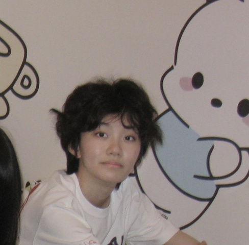

基本信息
请上传一张自己的照片，普通的生活照就可以！（只是为了面试的时候我们可以把你认出来）

查看原图
查看原图
通用问题部分
为什么想要加入CSSA？
我对于处理各类社团事务有丰富的经验，也希望通过CSSA这个平台丰富其他方面的经验，并结识更多朋友。我高中担任过多个社团的社长或管理层，因此很喜欢这种有相同背景或兴趣爱好的人们组成的团体。我希望加入CSSA来为康奈尔的所有中国学生做力所能及的帮助。
你心目中CSSA是个什么样的组织？
CSSA是我初来乍到康奈尔时感到最亲切的组织。它不仅在所有同学还素未谋面时用群聊让大家熟络起来，而且还为大家开学阶段的各种迷茫提供了一个求助的渠道。同时，尽管还未亲身经历过，但我很早就听说CSSA常年在校内帮助举办的各种中国学生活动。这些都让我感到CSSA是一个包容且紧密的团体。
加入CSSA之后，你最想在康奈尔校园内实现的事情是什么？
如果加入CSSA，我希望能向前辈们学习寻找和沟通校外funding资源的能力，同时也在后端帮助策划各种大型活动。首先我会耐心向前辈学习部门的基础工作，在熟悉流程后，我希望能帮助提高各流程的处理效率，减少沟通成本。
财务部
第一志愿为什么选择这个部门？
我高中作为天文社社长获得了丰富的财务管理经验。由于天文类活动对器材的高需求，我曾多次代表社团向校外机构募集资金，并合理安排资金去向。因此，我对财务管理方面有一定的熟悉度，希望能在财务部继续发挥这方面的能力，并能深入了解学校的funding政策，同时向前辈们学习更多与校外资源沟通的能力。
秘书处
如果让你选择一周的工作，你想做什么？
整理一份混乱的历年档案库
当别人第一次见到你时，他们会说“哇，你居然___！”（请填空）
是个这么注重细节的人
某天深夜，一位新生在微信上非常焦急地询问：‘我的航班延误了了，接机联系不上怎么办？现在半夜一个人在机场好害怕...’
作为小助手值班的你，会如何回复？请写出具体回应（注意：你无法直接解决问题，但需要让TA感到安心）。
请先一定保证人身安全，待在机场明亮的地方，不要随意出去或和陌生人搭话。你可以找个地方坐下来休息一下，我知道xx机场的xx是个适合休息的地方。先别担心，我会帮你联系一下接机的人，相信一定能解决的！
你希望从秘书处的伙伴们和这份工作中获得什么？（比如：深厚的友谊？一份完美的简历？超硬核的技能？还是单纯的快乐？）
我希望获得丰富的管理经验同时拥有更多熟悉的人。
第二志愿为什么选择这个部门？
因为我自认为是一个有条理的人，比较擅长整理各种资料，并擅长协调多方面事务。我也对于帮助他人很有热心，因此想加入秘书处为更多学生提供帮助。
是否接受部门调剂？
是